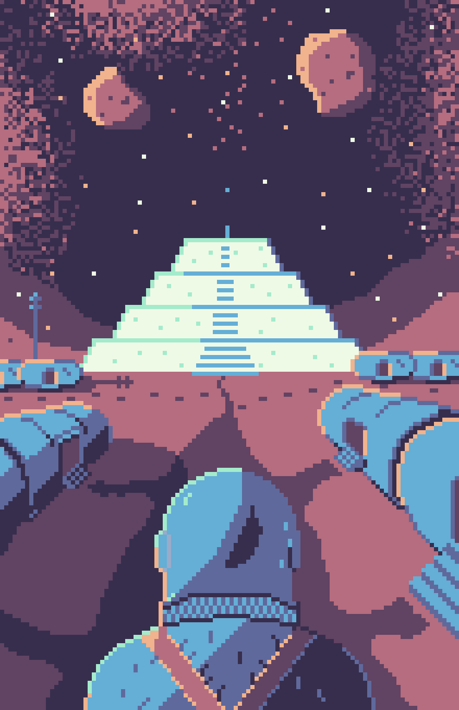

Last updated: Thu Aug 15 2024 | Permalink | RSS
A pixel art image of an astronaut in a spacesuit looking down a path in a Martian settlement. The path ends at a massive salt pyramid with a tiny figure on top and one blue dot among the stars.
I've been reading the Mars Trilogy by Kim Stanley Robinson. I've been loving these books and flying through them. This was how I imagined the initial settlement, Underhill, with it's barrel-shaped shelters and giant salt pyramid.
I also read his more recent The Ministry for the Future, which I would highly recommend for some great speculative fiction on addressing the climate crisis.
This piece was a little more of a challenge with wanting to use a 1-point perspective and shading, but I am happy with how it came out! I used a great color palette by Anubi!
Thank you for reading! Please consider supporting this blog.